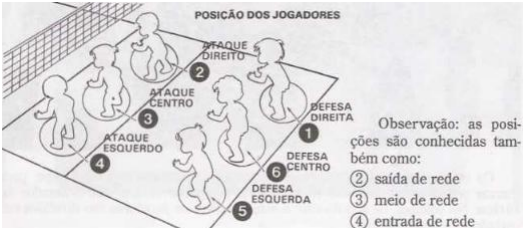

Regras do Volei:
Área da quadra: 18x9
Altura da rede: 2,24 para jogos femininos e 2,43 para jogos masculinos
N° de jogadores: 12 jogadores no máximo, 6 efetivos e 6 substitutos
Marcação de pontos:
A equipe marca ponto quando:
- Consegue fazer a bola tocar na quadra da equipe adversária;
- A equipe adversária lança a bola para fora da quadra de jogo;
- A equipe adversária comete uma violação da regra;
- A equipe adversária é penalizada.
Significado de Rally no voleibol:
Rally no voleibol são todos as ações que acontecem no jogo desde o momento que acontece um saque até o momento em que uma equipe marca um ponto. A cada novo saque é iniciado um novo rally. Se a equipe que saca, vence um rally, ela ganha um ponto e o mesmo jogador continua sacando. Se a equipe receptora do saque vence um rally, ela marcará um ponto e deverá executar o próximo saque.
Número de sets numa partida de voleibol:
- Uma partida de voleibol tem no mínimo 3 sets e no máximo 5 sets;
- Vence um set no voleibol a equipe que primeiro fizer 25 pontos com uma diferença de 2 pontos;
- Caso o jogo fique empatado em 24 a 24, o set continuará além dos 25 pontos até que uma equipe consiga abrir os 2 pontos de diferença e vencer o set. Ex: 26 a 24, 25 a 27, 28 a 26 etc...;
- Vencerá a partida a equipe que primeiro vencer 3 sets;
- Em caso de empate em 2 sets a 2, será disputado o set desempate ou tie-break de 15 pontos.
Posicionamento inicial da equipe:
Cada equipe deve ter sempre seis jogadores na quadra de jogo. O posicionamento inicial dos jogadores indica a ordem de rodízio dos mesmos na quadra. Esta ordem deve ser mantida durante o set e só pode ser alterada no início de um novo set. No momento em que a bola é colocada em jogo pelo sacador, cada equipe deve estar posicionada dentro de sua própria quadra de jogo, (exceto o sacador) conforme a ordem de saque. Depois do toque do saque, os jogadores podem se deslocar e ocupar qualquer posição na sua própria quadra.
As posições dos jogadores são : três jogadores se encontram posicionados ao longo da rede, formam a linha de ataque e ocupam as posições: 4 ENTRADA DE REDE (ataque-esquerda); 3 MEIO DE REDE (ataque-centro) e 2 SAÍDA DE REDE (ataque-direita).
Os outros três jogadores são os jogadores de defesa e ocupam as posições: 5 ENTRADA PELO FUNDO (defesa-esquerda), 6 MEIO FUNDO (defesa-centro) e 1 FUNDO PELA SAÍDA (defesa-direita).

Posições dos jogadores
Rodízio:
a rotação dos jogadores é determinada pela formação inicial, controlada pela ordem de saque e a posição dos jogadores, durante o set. Quando a equipe receptora ganha o direito de sacar, seus jogadores efetuam uma rotação, avançando uma posição, sempre no sentido horário.
O jogador na posição 2 vai para a posição 1, a fim de sacar; o jogador na posição 1 vai para a posição 6, e assim por diante.
Bola "dentro":
a bola é considerada “dentro” quando ela toca o piso da quadra de jogo, incluindo as linhas de delimitações.
Bola "fora":
a bola é considerada “fora” quando:
- a parte da bola que toca o piso está totalmente fora das linhas de delimitações da quadra,
- tocar em algum objeto fora da quadra, o teto ou uma pessoa que não faça parte do jogo,
- tocar nas antenas, cordas, postes ou a própria rede fora das faixas laterais,
- cruzar o plano vertical da rede, estando parcial ou completamente fora do espaço de cruzamento permitido,
- cruzar completamente o espaço por baixo da rede.
Toques da equipe:
Cada equipe tem o direito de tocar, no máximo, 3 vezes na bola (além do toque de bloqueio) para retorná-la à equipe adversária. Caso haja um número maior de toques, a equipe comete uma falta de “quatro toques”. Os toques da equipe incluem não somente os toques intencionais, mas também os não intencionais contatos com a bola. Um jogador não pode tocar na bola duas vezes consecutivamente.
Faltas no toque da bola:
- quatro toques – quando a equipe toca na bola quatro vezes antes de retorná-la à equipe adversária.
- Toque apoiado – quando um jogador apoia-se em um companheiro ou em alguma estrutura/objeto com o intuito de alcançar a bola e tocá-la, dentro da quadra de jogo.
- Condução – quando um jogador não toca a bola, mas a segura, ou a conduz em qualquer direção.
- Dois toques– quando um jogador toca na bola duas vezes ou a bola toca em várias partes do seu corpo sucessivamente.
Invasão por baixo da rede:
é permitido ao jogador penetrar no espaço adversário por baixo da rede, com a condição de não interferir na ação de jogo do adversário.
O jogador líbero:
- Cada equipe tem direito a relacionar 2 líberos.
- Cada equipe só pode ter 1 líbero atuando em quadra,
- O líbero deve usar uniforme com cor dominante diferente dos outros jogadores de sua equipe,
- O líbero não pode sacar, bloquear, tentar bloquear ou atacar a bola estando ela acima da faixa superior da rede,
- O líbero só pode substituir jogadores que estão ocupando a zona de defesa (posições 5, 6 e 1),
- Se o líbero na zona de ataque fizer um levantamento usando o toque, seus companheiros não poderão atacar acima da faixa superior da rede. Caso o levantamento seja feito usando o fundamento manchete, o ataque poderá ser realizado normalmente,
- Na zona de defesa o líbero poderá realizar levantamentos de qualquer forma.
Definições de outros termos do voleibol:
- Condução: infração cometida pelo jogador quando conduz a bola em vez de tocá-la,
- Invasão: infração cometida com o corpo além da rede do adversário,
- Cravar: bater com violência a bola no chão da quadra do adversário,
- Largadinha: um leve toque na bola, buscando espaço vazio na defesa do adversário,
- Bola de segunda: ataque no segundo toque, surpreendendo o adversário,
- Match point: ponto que pode definir o jogo,
- Set point: ponto que pode fechar o set,
- Tie break: é o set de desempate, disputado quando cada uma das equipes vence dois sets,